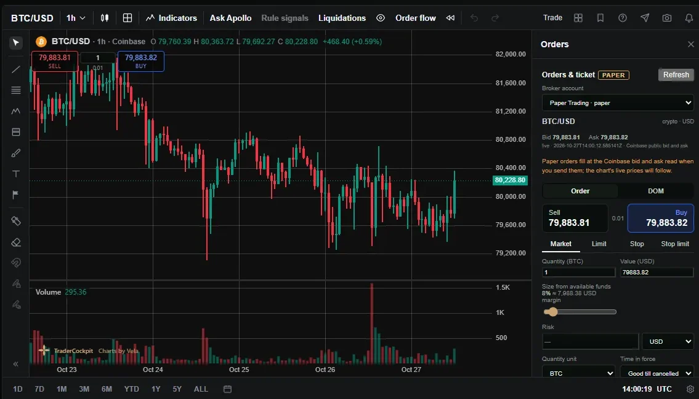
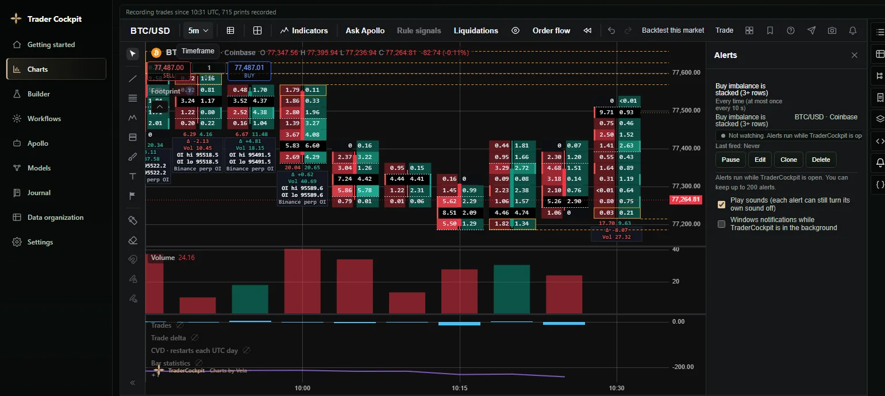
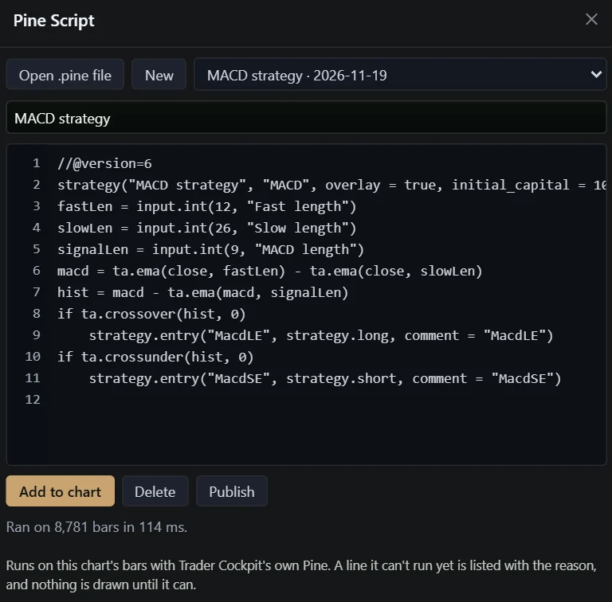
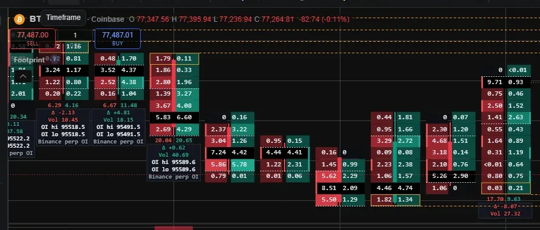
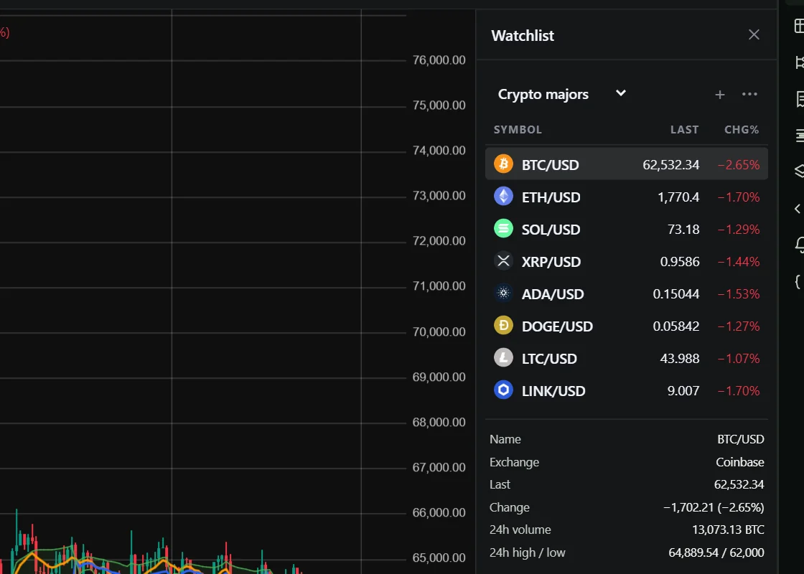

Free
$0 / month
Charts, order flow, paper trading, the Community and your Journal, after a free sign-in. No payment.
- Charts at once: 4
- Indicators per chart: 10
- Saved chart layouts: 1
Trader Cockpit searches thousands of rule combinations on your market, backtests each one, then tries to break the ones it keeps. It runs on your PC and needs no code.
For Windows. A Free plan, and paid plans from $19.99 a month.
Why the 13,355 were dropped




Pick a market and set your costs. Builder builds and backtests thousands of strategies on your own PC, keeps the ones that pass your rules, and shows why the rest were dropped.
Strategy Builder
Ready-made workflows run out-of-sample periods, other markets, slippage, Monte Carlo and walk-forward on their own. You see why each strategy dropped out.
Workflows and robustness checks
Every strategy gets one grade and the reasons behind it. When it has only been tested on the data it was built on, the verdict says so.
ResultsYour own Pine scripts run on the chart. Strategies go out the other way: retest on TradingView’s bar-close timing and export as Pine, or take the rules as MetaTrader, EasyLanguage or Python code.
Exports
Seventeen chart types, nearly 1,000 community indicators beside the built-ins, drawings, alerts, watchlists, Bar Replay and your own Pine scripts. Up to sixteen charts at once.
Charts


31 brokers connect to Trader Cockpit. You sign in with your broker in your own browser, and your password never goes into the app.
Place orders from the chart, and see your positions, balances and orders. Paper trading on live crypto prices needs no broker account.
See your positions, balances and orders.
Every paid plan includes every feature. Searches and backtests run on your PC with no count or credit limit on any paid plan. A workflow set to repeat stops after an hour.
$0 / month
Charts, order flow, paper trading, the Community and your Journal, after a free sign-in. No payment.
$19.99 / month
Everything, with one Apollo task at a time.
$49.99 / month
Everything, with more Apollo credits and two Apollo tasks at a time.
$99.99 / month
Everything, for heavier research with Apollo and Models.
$150 / month
Everything, with the most Apollo credits and tasks at a time.
Strategies with their rules and backtests, and open-source Pine indicators. Open one in the app with a click, and publish your own.

Out-of-sample testing, Monte Carlo, walk-forward and the ways a backtest can mislead you.